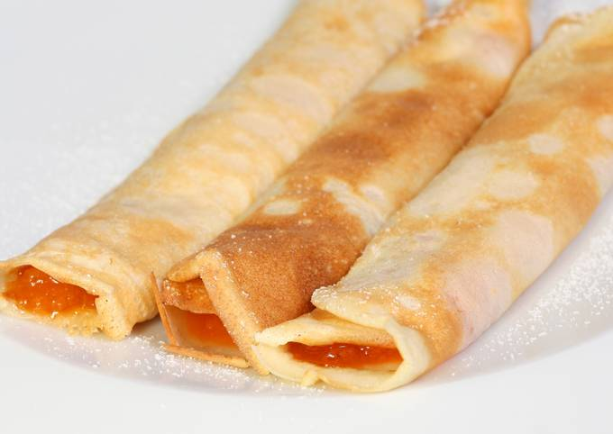

Palacsinta

Home
Leírás
Nem ragad, nem szakad, ez a mi palacsinta alapreceptünk!
Hozzávalók
- 3 db tojás
- 2 ek cukor
- 1 csomag vaníliás cukor
- 240 g finomliszt
- 2.5 dl tej
- 2.5 dl szódavíz
- 0.5 dl napraforgó olaj
Elkészítés
- Egy tálba ütjük a tojásokat, majd a cukrokkal együtt kikeverjük.
- Folyamatos keverés mellett hozzáadjuk a tojásos keverékhez a lisztet, majd a tejet és a szódát, végül az olajat, és csomómentesre keverjük.
- Egy serpenyőt vagy palacsintasütőt egy ecsettel vékonyan megkenünk olajjal, majd megsütjük a palacsintákat.